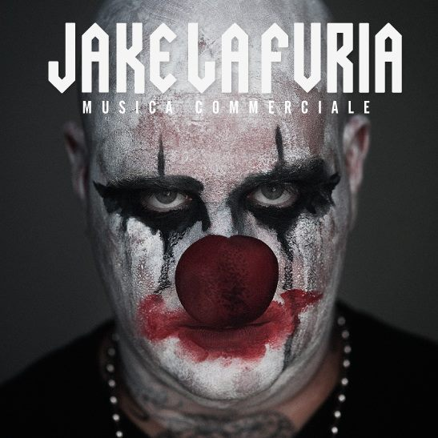

Moogfest: il programma e non solo. Preparatevi a farvi stupire!
di Stefano Munari 04/02/14

Il Moogfest, festival nato 10 anni or sono per celebrare il pioniere che è stato Bob Moog, e che viene organizzato ad Asherville nel North Carolina tra il 23 ed il 27 di Aprile, ha finalmente svelato il suo programma, che come sempre si dividerà fra giorno e notte.
continua →
Tag Articolo:
festival (8)
Musica Commerciale.. Cosa vuole dirci Jake?
di Valerio Burlin 01/02/14

Conosco artisticamente Jake dai primi anni del 2000. La scena italiana era tutt'altra cosa rispetto ad oggi, in giro c'era poca gente o più probabilmente molta meno gente riusciva e estendere il suo bacino d'utenza fuori dai confini delle rispettive città.
continua →
Tag Articolo:
festival (1)
Alex Kapranos accusa di plagio Pharrell Williams
di Fabio Ros 28/01/14
«Hey Pharrell - mi piacciono le tue canzoni. Se vuoi un riff in prestito, basta chiedere...». La frecciata a quello che per i Grammy è il produttore dell'anno, Pharrell Williams, porta la firma di Alex...
continua →
Tag Articolo:
pop (10)
Il ruolo dei numeri nella musica di J.S.Bach
di Alberto Andeliero 28/01/14

La musica nel medioevo apparteneva al Quadrivium (letteralmente quattro vie) insieme all’aritmetica, alla geometria ed all’astronomia che disciplinavano l’ambito matematico.Sant’Agostino, nel suo De Doctrina Christiana, scrive: «Ignorare o sottovalutare il significato mistico dei numeri significa precludersi la comprensione di un’infinità di nozioni».
continua →
Tag Articolo:
classica (2)